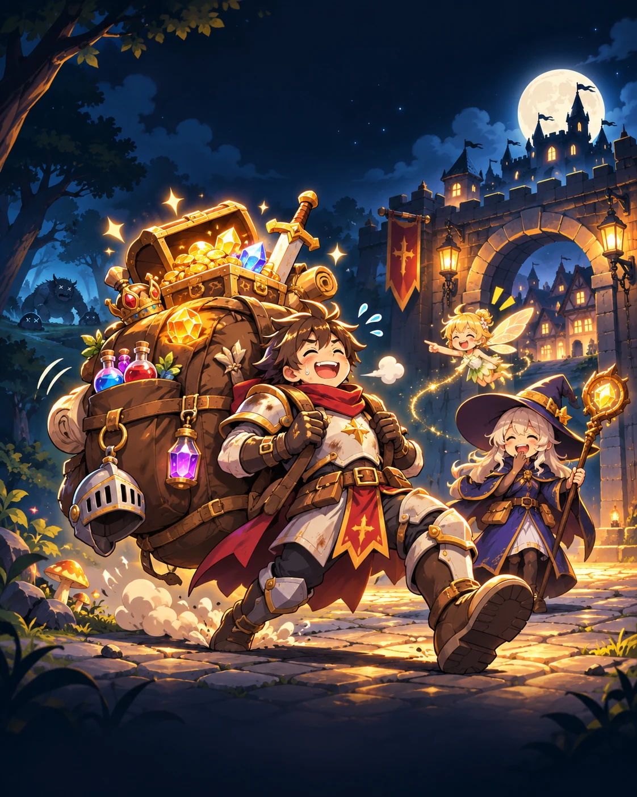

원정대 귀환 안내 · 가방 먼저 확인
보스는 아직인데
가방이 먼저귀환을 외친다.
전리품 하나만 더 줍고 싶었을 뿐인데, 물약이랑 무게를 확인하다가 어느새 귀환 타이밍 회의 중.
“한 마리만 더 잡고 갈까?”
가방: 지금 돌아가라고요.
원정은 사냥터에서,
정리는 마을에서
기사·마법사·요정 중 하나로 사냥터를 탐험하는 판타지 RPG입니다. 직접 싸울지 자동 사냥에 맡길지 고르고, 전리품과 물약, 가방 무게를 챙겨 다음 원정을 준비하세요.
출발 전 가방 점검
모험가의 귀환 체크리스트
전투 방식손으로 직접 싸우기 또는 자동 사냥
챙길 것전리품, 물약, 그리고 남은 가방 무게
마을에 오면전리품 판매하고 장비 강화, 다음 사냥터 준비
직업 선택기사 · 마법사 · 요정
다음 원정은 Android에서
이번엔 가방부터 비우고 출발.
전투와 귀환, 성장의 한 바퀴가 이어지는 판타지 RPG 귀환의 서. Google Play에서 만나요.
Google Play에서 원정 출발안드로이드 게임 · INDANG SOFT